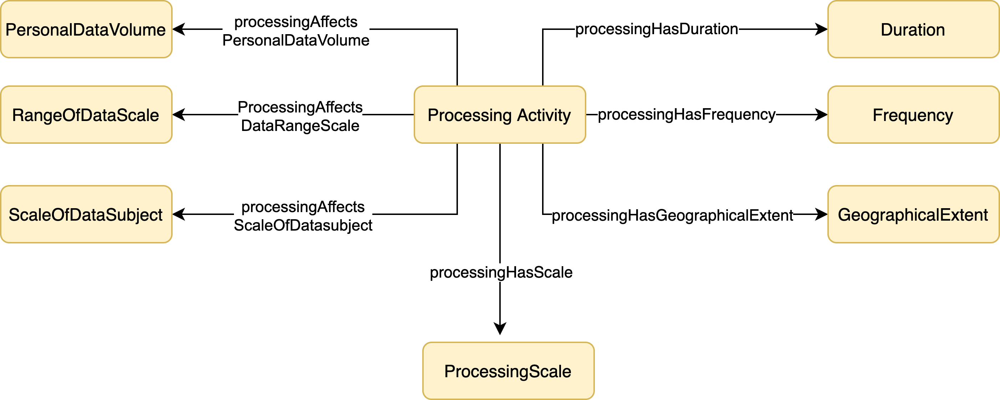
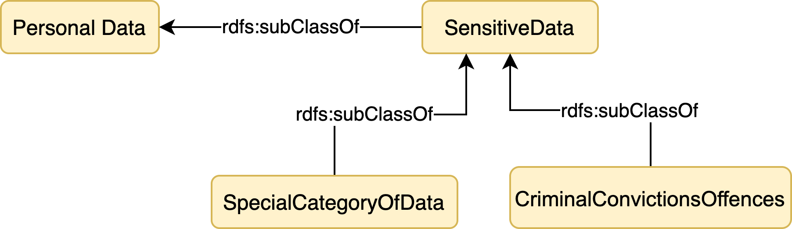

Introduction
One of the novelties of the European General Data Protection Regulation (GDPR) for regulating data controllers is
the requirement of taking a risk-based approach in the processing of personal data; which means data
controllers
should consider the risks of their projects or processing activity proactively to prevent, as much as
possible, causing any
harm to individuals. The envisaged tool in the GDPR for this goal is Data Protection Impact Assessment (DPIA).
DPIA is
required to assess and manage the risks of any project or processing activity likely to result in a high risk to
the rights and freedoms of natural persons. It is not only valuable for building compliance in the organizations
but also to demonstrate it. In this sense, it can be considered a vital tool for following the Regulation's
accountability
principle.
The main objective of this vocabulary is to support the first step before starting a complete DPIA, which is to
decide whether a
full DPIA is needed for a specific project or processing activity according to GDPR or not. Art. 35(1) ties in the
necessity of DPIA with the risk level of the processing activity: if the activity is likely to pose high risk to
the rights and freedoms of individuals, then a DPIA is required. Hence, it can be inferred that the main objective
here is to decide whether the processing activity is of type high risk or not. This decision is critical and
should be
performed accurately as the fault decision of skipping the risk assessment when it is essential may lead to
adverse
consequences.
GDPR, Art. 35(3) lists three cases in which a DPIA is particularly mandatory:
1. A systematic and extensive evaluation of personal aspects relating to natural persons which is based on
automated
processing, including profiling, and on which decisions are based that produce legal effects concerning the
natural
person or similarly significantly affect the natural person
2. Processing on a large scale of special categories of data referred to in Article 9(1), or of personal data
relating
to
criminal convictions and offences referred to in Article 10.
3. A systematic monitoring of a publicly accessible area on a large scale.
Furthermore, based on GDPR Art.35(1), (3) and Recitals 71, 75, 76, 91, 92 and 116, Article 29 Working Party’s
guideline
on DPIA provides a more detailed list of the processing operations that need a DPIA. This list contains nine
criteria:
1) Evaluation or Scoring, 2) Automated decision making with legal or similar significant effect,
3)
Systematic
monitoring, 4) Sensitive data or data of a highly personal nature, 5) Data processed on a
large scale, 6) Matching
or
combining datasets, 7) Data concerning vulnerable data subjects, 8) Innovative use or applying
new technological
or
organizational solutions, and 9) Processing preventing data subjects from exercising a right or using a
service or
contract.
Understanding if any of these nine criteria applies to the processing operation is not always straightforward for
data
controllers as it is needed to interpret and further explain each of them.
As an example, consider the condition which indicates if the data is processed on a large scale, then a DPIA may
be
needed. Here, the first and main question of a data controller would be when a processing operation is
considered as
large scale? GDPR gives no complete information of what constitutes large-scale. The
WP29 Guidelines on Data Protection Officer, however, defines four conditions for this criterion: when a large
number
of data subjects are involved, when large volume/ range of data is processed, when processing continues
for large
duration, and finally, when large geographical extent is affected.
Deciding about the
applicability of some of
the other criteria in this list, however, is not that straightforward. For instance, determining whether a
new technology or organizational
measure is used in the processing activity, or whether a data controller uses a technology in an
innovative way is
challenging and depends on the interpretation of these terms.
This vocabulary aims to assist data controllers in better understanding the riskiness of their processing
operations by
investigating the elements of information that need to be considered for this purpose and modelling them using
Semantic
Web technologies. More specifically, the ontology represents the aspects and
characteristics of the processing operations which should be considered to assess the risk level of operations.
Ontology Requirement Specification Document
|
Data Protection Impact Assessment Ontology
|
|
1. Purpose
|
|
The purpose of the ontology is to support determining whether a processing activity/ project
is of type high-risk to the rights and freedom of individuals, by representing the concepts
required to make the inference.
|
|
2. Scope
|
|
The scope of this ontology is limited to the identification of concepts mentioned in the European GDPR for
reaching the abovementioned purpose.
Other guidelines which give further explanations of GDPR Articles, such as WP29 guideline on DPIA [], as
well as variouse case laws and DPAs decisions, have been
considered in this work.
|
|
3. Implementation Language
|
|
OWL
|
|
4. Intended End-Users
|
1. Developers of applications supporting DPIA
2. Data controllers collecting personal data, or in particular, Data Protection Officers (DPO).
|
|
5. Intended Uses
|
1. Identification of high-risk processing avtivities/projects.
2. Understanding whether a DPIA is necessary for a processing avtivity/project.
3. Development of wizard tools/ applications assisting data controllers to detect processing operations with
high risk.
|
|
6. Ontology Requirements
|
|
a. Non-Functional Requirements
|
|
NFR 1. The ontology should be published online, following the FAIR principle[].
|
|
b. Functional Requirements: Competency Questions
|
|
CQG1. Large-scale Data Processing
|
CQ1. What is the scale of the processing activity?
CQ1.1. What is the scale of data subject affected by the processing activity?
CQ1.2. What is the scale of personal data assoiciated with the processing activity?
CQ1.3. How many ranges of personal data items are going to be processed?
CQ1.4. What is the geographical extent of the processing activity?
CQ1.5. What is the frequency of the processing activity?
CQ1.6. For how long the processing activity last?
|
|
CQG2. Processing of Sensitive Data
|
CQ2. What is the category of personal data used in the processing operation?
CQ2.1. Does processing operation contain special categories of data listed in GDPR Art. 9?
CQ2.2. Does processing operation contain processing of personal data relating to criminal convictions and
offences (Art. 10)?
CQ2.3. Does processing contain other types of personal data which have highly personal nature (such as
electronic, communications, locations, etc.)?
|
|
CQG3. Data Concerning Vulnerable Data subjects
|
CQ3. Who are the data subjects affected by the processing activity?
CQ3.1. Does the processing activity target any vulnerable data subject?
CQ3.2.What is the relationship between data controller and data subject?
CQ3.3. Considering the purpose of the processing, is there any increased power imbalance between the data
controller and data
subjects?
CQ3.4. Are data subjects unable of easily give consent to, or oppose the processing of their data, or
exercise their right
(children, etc.)?
CQ3.5. Do data subjects need special protection (mentally ill persons, asylum seekers, the elderly,
patients)?
|
|
CQG4. Use of New and Innovative Technology and Organizational Solution
|
CQ4. What type of technology or organizational solutions do you use in your processing operation?
CQ4.1. Do you use innovatively different technology or organizational solutions in your
processing operation?
CQ4.2. Do you use new technological or organizational solutions in your processing
operation?
|
|
CQG5. Automated decision making with legal or similar significant effect
|
CQ5. Does the processing include any automated decision making with legal or similar significant effect on
individuals?
CQ5.1. Is personal data processed for making a decision?
CQ5.2. Does the processing operation involve some form of automation?
CQ5.3. Does any human involve in the processing activity?
CQ5.3.1. If the answer to CQ8.3 is yes, what is the influence of the human ont the result?
(does the person have the authority or competence to change the generated result/ have an actual influence
on the
result?)
CQ5.3.2. If the answer to CQ8.3 is yes, at what stage of the decison making process the human involves?
CQ5.4 What is the impact of processing on the individuals?
CQ5.4.1. What is the legal impact of processing on the individuals?
CQ5.4.1.1. What is the effect of processing on the individuals' legal rights?
CQ5.4.1.2. What is the effect of processing on the individuals legal status?
CQ5.4.1.3. What is the effect of peocessing on the individuals right under a contract?
CQ5.4.2. What are the similarly significant effects of the processing on individuals?
|
|
CQG6. Systematic Monitoring
|
CQ6. Does the processing activity include any systematic monitoring of data subjects?
CQ6.1. the processing activity include any monitoring of data subjects?
CQ6.1.2. Does processing activity include observing, monitoring, controlling, or tracking data subjects on
the inernet?
CQ6.1.3. Does the processing operation include tracking or monitoring individuals in publicly accessible
area?
CQ6.1.4. What is the effect of peocessing on the individuals right under a contract?
CQ6.2. If the answer to CQ.1. is yes, is the monitoring conducted in a systematic manner?
CQ6.2.1. Is the monitoring part of a general plan for the data collection phase?
CQ6.2.2. *Does the monitoring occur according to a system?
CQ6.2.3. *Is it a pre-arranged, organised or methodical monitoring?
CQ.2.4. *Does the monitoring taking place as part of a strategy?
|
|
CQG7. Matching or Combining Datasets
|
CQ7. Does data originate from two or more data processing operations performed for different purposes and/or
by
different data controllers in a way that would exceed the reasonable expectations of the data subject?"
CQ7.1. What is the origin/source of the dataset used for data processing?
CQ7.2. If data is the result of a processing operation, what is the purpose for it?
CQ7.3. Who is the data controller/processor generated/collected the data?
|
|
CQG8. Evaluation or Scoring
|
|
CQ8.1.
|
Specification
In this section, the classes and properties for representation of each of the
nine criteria mentioned earlier, are listed.
Large-scale Data Processing
WP29 guideline on DPIA mention the scale of the processing as a determinant criterion in
understanding the risk level of processing operations. It recommends the following factors to be considered
when determining whether the processing is conducted on a large scale:
1. the number of data subjects concerned, either as a specific number or as a proportion of the relevant
population
2. the volume of data and/or the range of different data items being processed
3. the duration, or permanence, of the data processing activity
4. the geographical extent of the processing activity
Accordingly, the following classes and properties are defined to represent the concepts indicated in the
guideline.
Diagram
Concepts associated with the scale of processing activities are represented below:

processing Affects Scale of Data Subject
processing Affects PersonalData Volume
processing Affects Data Range Scale
processing Has Geographical Extent
Processing Sensitive Data
WP29 guideline on DPIA specifies 3 kinds of personal data which their processing may lead to high risk
to the rights and freedom of individuals:
1.Special categories of personal data mentioned in GDPR, Article 9 (such as health data, political belief,
sexual orientation, etc.).
2.Personal data associated to criminal convictions or offences as defined in GDPR, Article 10.
3.Personal data of highly personal nature, or as commonly known, sensitiv data. These personal data
are considered sensitive as whether they strongly linked to the private activities (electronic
communications),
affect the exercise of fundamental rights, or their leak may have significant impact on individuals.
Diagram
Concepts associated with the sensitive data are represented below:

Personal Data
| Definition: |
Personal data being processed. |
| Label: |
gdpia:PersonalData |
| Source: |
|
Sensitive Data
| Definition: |
Sensitive data includes special category of data, criminal convictions and offences, as well as data
with highly
personal nature such as electronic communication which its confidentiality should be protected. |
| Label: |
gdpia:SensitiveData |
| Source: |
|
Special Category of Data
| Definition: |
Special categories of personal data mentioned in GDPR, Article 9(1) which their processing is
prohibited unless in cases
mentioned in Article 9(2). |
| Label: |
gdpia:SpecialCategoryOfData |
| Source: |
GDPR, Art.9(1) |
Criminal Convictions or Offences
| Definition: |
Personal data relating to criminal convictions and offences. |
| Label: |
gdpia:CriminalConvictionsOffences |
| Source: |
GDPR, Art.10 |
Data concerning vulnerable data subjects
Diagram
Concepts associated with the processing operations affecting vulnerable data subjects are represented below:

Vulnerable Data Subject
| Definition: |
Data subjects who considered to be vulnerable. |
| Label: |
gdpia:VulnerableDataSubjects |
| Source: |
GDPR, Recital 75 |
Subject-Controller Relationship
| Definition: |
Type of relation between data subject and data controller
|
| Label: |
gdpia:SubjectControllerRelationship |
| Source: |
|
Child
| Definition: |
A 'child' is a natural legal person who is below a certain legal age depending on the legal
jurisdiction. |
| Label: |
gdpia:Child |
| Source: |
GDPR, Recital 38 |
Special Category of Data
| Definition: |
Special categories of personal data mentioned in GDPR, Article 9(1) which their processing is
prohibited unless in cases
mentioned in Article 9(2). |
| Label: |
gdpia:SpecialCategoryOfData |
| Source: |
GDPR, Art.9(1) |
Criminal Convictions or Offences
| Definition: |
Personal data relating to criminal convictions and offences. |
| Label: |
gdpia:CriminalConvictionsOffences |
| Source: |
GDPR, Art.10 |
Use of New and Innovative Technology and Organizational Solution
Diagram
Concepts associated with the new and innovative use of technology:
Technology
| Definition: |
Technology used to implement the processing operation or technical measure. |
| Label: |
gdpia:Technology |
| Source: |
|
New Technology
| Definition: |
|
| Label: |
gdpia:NewTechnology |
| SubClass of: |
gdpia:Technology |
| Source: |
|
Innovative Use of Technology
| Definition: |
Using existing technologies in a new or innovative way. |
| Label: |
gdpia:InnovativeUseOfTechnology |
| Source: |
|
implemented Using Technology
| Definition: |
Property to associate a processing activity or a technical measure to the technology used for its
implementation. |
| Label: |
gdpia:implementedUsingTechnology |
| Source: |
|
Automated decision making with legal or similar significant effect
Diagram
Concepts to represent Automated-decision making with legal or similar significant effect:
Decision Making
| Definition: |
The process of making choice based on certain criteria from two or more alternatives. It covers a vast
type of operations such as
authentication and anonymization to recommendation and profiling, through the use of tools ranging in
complexity from simple spreadsheet formulas, to advanced statistical modeling,
rules-based artificial intelligence, or machine learning. |
| Label: |
gdpia:DecisionMaking |
| Source: |
|
Human Involvement
| Definition: |
|
| Label: |
gdpia:HumanInvolvement |
| Source: |
|
has Human Involvement
| Definition: |
Property to model whether the processing activity has any form of human involvement. |
| Label: |
gdpia:hasHumanInvolvement |
| Domain: |
gdpia: ProcessingActivity |
| Range: |
xsd:boolean |
| Source: |
|
Decision Making Stage
| Definition: |
A stage in the process of Decision Making. |
| Label: |
gdpia:DecisionMakingStage |
| Source: |
|
has Authority Level
| Definition: |
The authority level of the human (in terms of his power to modify the results) involved in the
processing. |
| Label: |
gdpia:hasAuthorityLevel |
| Source: |
|
Impact
| Definition: |
Impact of the processing activity on individuals. |
| Label: |
gdpia:Impact |
| Source: |
|
Significant Impact
| Definition: |
Impact significantly affects data subject, e.g, affects the circumstances, behaviour or choices of the
individuals concerned;
have a prolonged or permanent impact on the data subject; or
at its most extreme, lead to the exclusion or discrimination of individuals. |
| Label: |
gdpia:SignificantImpact |
| SubClass of: |
gdpia:Impact |
| Source: |
|
Impact with Legal Consequence
| Definition: |
Any effects on someone's legal situations such as legal rights, legal status, etc. |
| Label: |
gdpia:ImpactWithLegalConsequence |
| SubClass of: |
gdpia:SignificantImpact |
| Source: |
|
Impact on Rights
| Definition: |
Impact of the processing activity on someones' legal rights such as the freedom to
associate with others, vote in an election, or take legal
action. |
| Label: |
gdpia:ImpactOnRights |
| SubClass of: |
gdpia:ImpactWithLegalConsequence |
| Source: |
|
Impact on Legal Status
| Definition: |
Impact of the processing activity on someones' legal status. |
| Label: |
gdpia:ImpactOnRights |
| SubClass of: |
gdpia:ImpactWithLegalConsequence |
| Source: |
|
Impact on Contract Rights
| Definition: |
Impact of the processing activity on someone's rights under a contract; for example, cancellation of a
contract. |
| Label: |
gdpia:ImpactOnRights |
| SubClass of: |
gdpia:ImpactWithLegalConsequence |
| Source: |
|